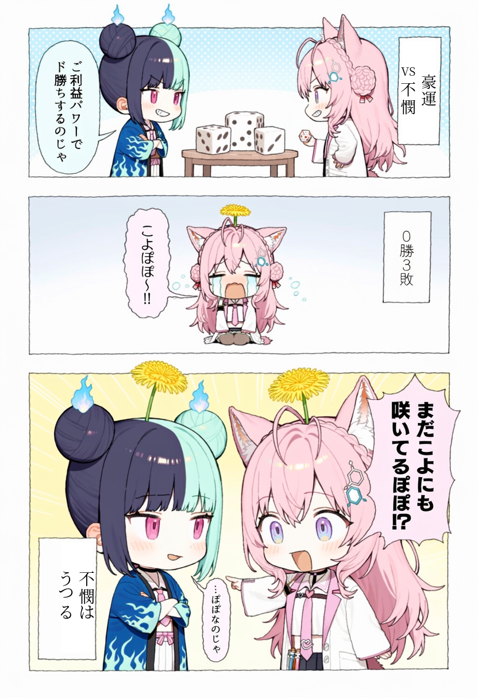

博衣こより・熱千めら

投稿する本文（URLは最後）
豪運めら VS 不憫こより、初コラボで運ゲー対決したら #博衣こより #熱千めら #のじゃこよ #こより実験中 #めら組出動中 https://x.com/hakuikoyori/status/2117103006865146164
Xの文字数：136 / 280
共有シートで「X」を選んでください。URLは本文の最後に入っていて、Xでは引用カードとして表示されます。
共有がうまくいかないとき
画像を保存保存できないときは、上の画像を長押しして「写真に追加」。
Xアプリで元ポストを開く元ポストの「リポスト → 引用」からも引用できます。
本文だけでXの投稿画面を開くこの方法では画像は付きません。投稿画面で画像を追加してください。